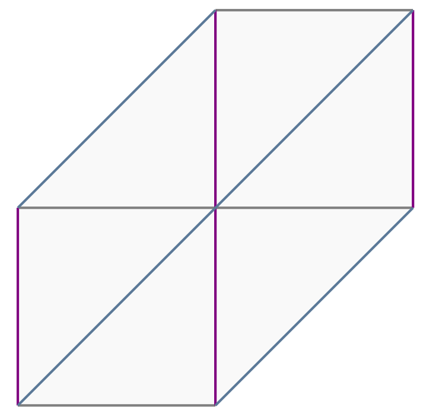
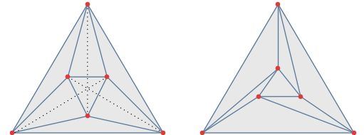
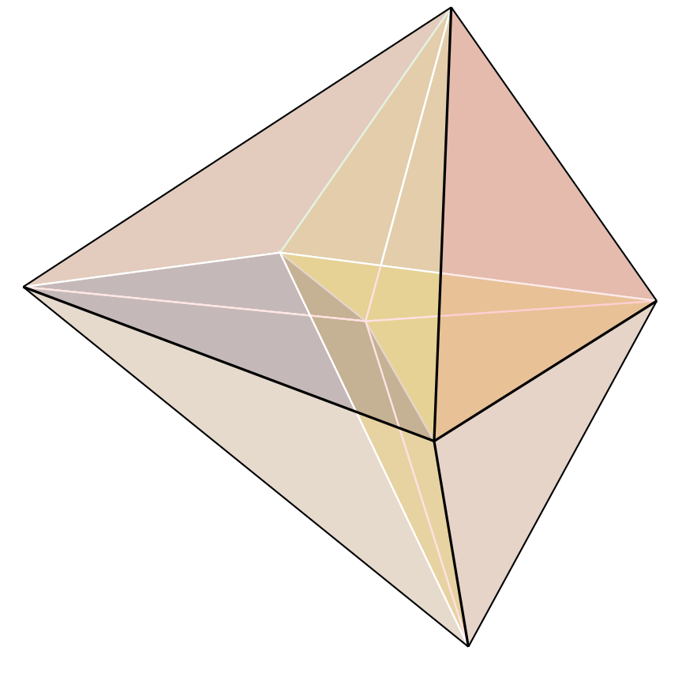
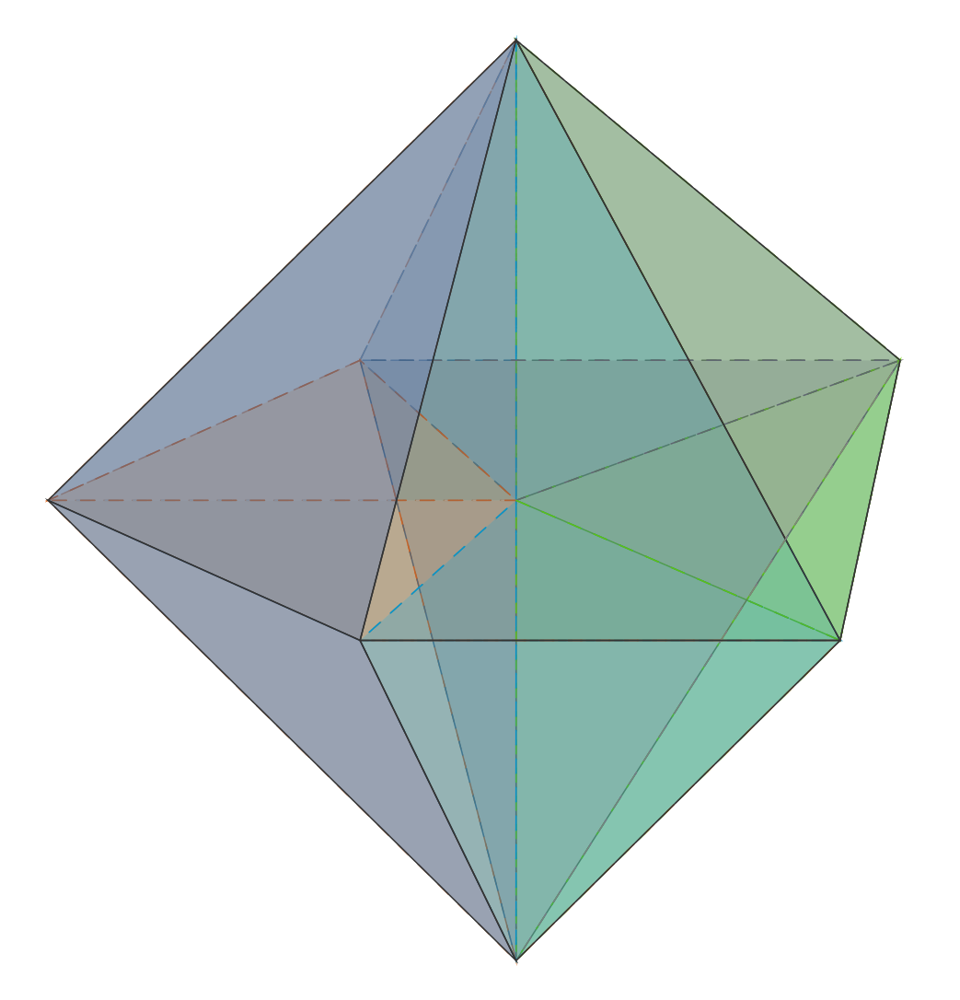
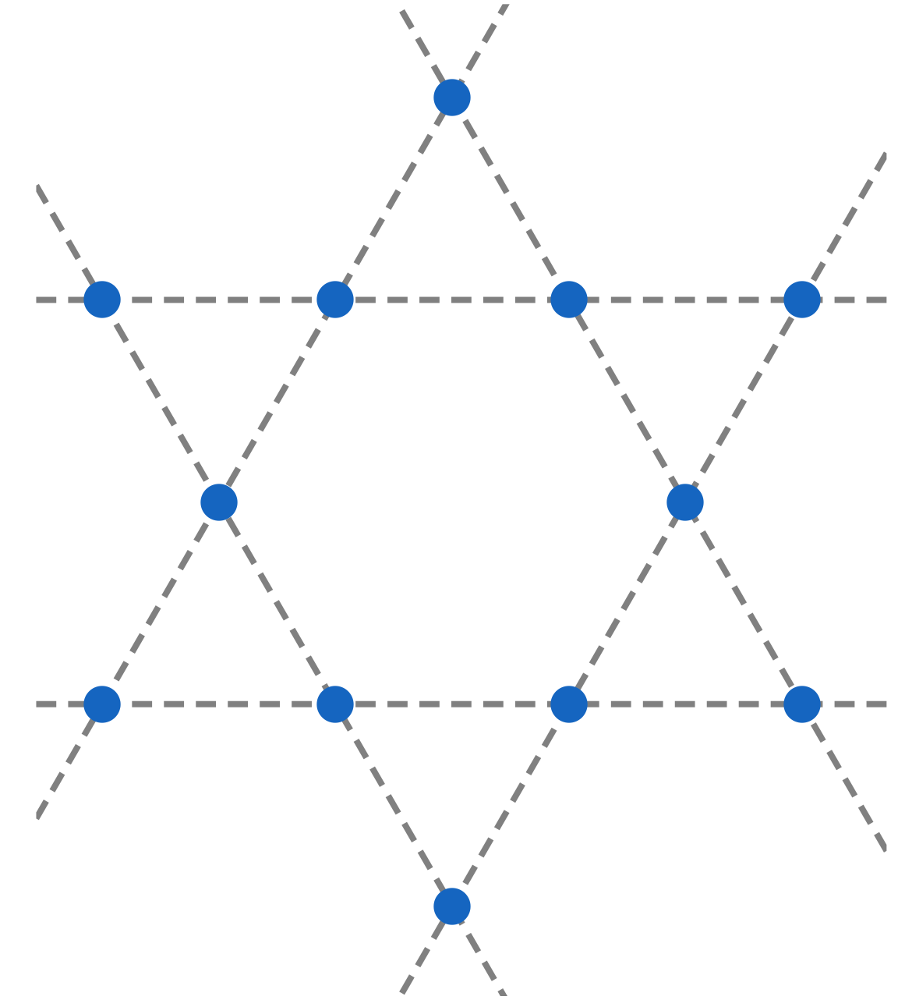

The algebraic nature of computer graphics
Dr. Nelly VillamizarDepartment of Mathematics, Swansea University
-
Mathematics in the Digital Age, South West and Wales IMA branch
November 26th, 2020

Splines

FEM to solve PDE's



Piecewise polynomial functions
A. Lockwood
\[\mathbf{p}_1=(1-t)\mathbf{c}_1+t\mathbf{c}_2\qquad
\mathbf{p}_2=(1-t)\mathbf{c}_2+t\mathbf{c}_3\\
\mathbf{p}_3=(1-t)\mathbf{c}_3+t\mathbf{c}_4\\
\mathbf{q}_1=(1-t)\mathbf{p}_1+t\mathbf{p}_2\qquad
\mathbf{q}_2=(1-t)\mathbf{p}_2+t\mathbf{p}_3\]


Higher dimensional splines
García-Puente, Sottile and Chungang



 A pair of polynomials $(f,g)$ is $C^r$-continuous across a common face iff \[f - g = \ell^{r+1} h \Leftrightarrow f-g\in \langle \ell^{r+1}\rangle \]
A pair of polynomials $(f,g)$ is $C^r$-continuous across a common face iff \[f - g = \ell^{r+1} h \Leftrightarrow f-g\in \langle \ell^{r+1}\rangle \]
Splines and fat point ideals
$\ell=a x+b y+c z\quad \longleftrightarrow \quad P = [a :b:c]\in \mathbb{P}^ 2 $
$\langle \ell_1^{r+1}, \cdots, \ell_m^{r+1}\rangle_d \quad \longleftrightarrow \quad \wp_1^{d-r}\cap\cdots\cap\wp_m^{d-r}$


Splines, Algebra, and Combinatorics



Splines, Algebra, and Combinatorics




 Blidia, Mourrain, and Xu.
Blidia, Mourrain, and Xu.